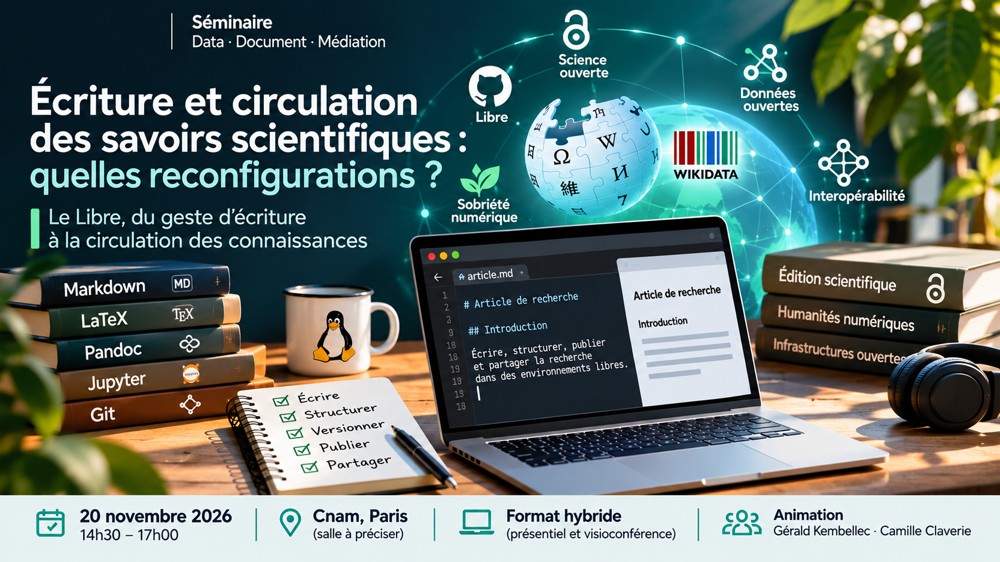

14h30 · Accueil et introduction (Camille Claverie & Gérald Kembellec).
Séminaire · Data · Document · Médiation (2DM)
Écriture et circulation des savoirs scientifiques : quelles reconfigurations ?
Laboratoire Dicen · 20 novembre 2026
Présentation

Les transformations des environnements numériques interrogent en profondeur les formes de production, d'écriture, d'édition et de circulation des savoirs scientifiques. Des médias sociaux aux chaînes éditoriales, des plateformes collaboratives aux formats documentaires, les dispositifs techniques participent pleinement à la fabrique des connaissances et à leur mise en circulation.Écrire, publier et diffuser la recherche ne relèvent pas uniquement de pratiques intellectuelles ou éditoriales. Ces activités s'inscrivent dans des environnements techniques qui influencent les formes d'expression, organisent les interactions et conditionnent les possibilités de circulation des contenus.
Le Libre : une condition de l'autonomie scientifique ?
Dans ce contexte, le Libre constitue un enjeu transversal, à la fois technique, documentaire, politique et épistémologique.
Le choix des logiciels d'écriture, des formats documentaires, des plateformes de diffusion et des infrastructures de publication engage directement la capacité des communautés scientifiques à maîtriser leurs propres environnements de travail. Logiciels libres, formats ouverts, interopérabilité, décentralisation et transparence constituent autant de leviers pour préserver cette autonomie.
Les environnements numériques ne sont pas de simples supports neutres : ils participent à façonner les contenus, les modalités de production des connaissances et leurs conditions de visibilité et de circulation.
La maîtrise des infrastructures techniques est-elle une condition de l'autonomie intellectuelle et éditoriale des communautés scientifiques ?
Cette séance propose de mettre en discussion ces enjeux à travers deux interventions complémentaires : l'une consacrée aux espaces numériques de circulation des écrits scientifiques, l'autre aux environnements techniques d'écriture et aux infrastructures de l'édition scientifique.
Programme
14h45 · Intervention 1
Antonin Segault
Maître de conférences en Sciences de l'information et de la communication à l'Université Paris Nanterre, chercheur au laboratoire Dicen.
Les écrits scientifiques et les médias sociaux : évolutions récentes
Spécialiste de la circulation des savoirs et des plateformes collaboratives, Antonin Segault étudie les dynamiques collectives du Web, de Wikipédia à la communication de crise, sujet auquel il a consacré sa thèse de doctorat. Il codirige également les Modules Innovants Pédagogiques, un projet d'exploration numérique conduit en partenariat avec l'INA autour de l'analyse de grands jeux de données audiovisuelles.
Particulièrement engagé dans l'écoconception numérique et la transparence des plateformes, il inscrit ses pratiques dans une démarche de sobriété et d'autonomie numérique. Sa présence en ligne en témoigne : il privilégie les réseaux sociaux décentralisés, notamment Mastodon, et un site personnel minimaliste, sans traceurs ni intelligence artificielle.
Son intervention abordera les évolutions récentes des pratiques d'écriture et de diffusion scientifiques sur les médias sociaux. Elle permettra d'interroger les transformations des modes de visibilité et de circulation des connaissances, mais également les enjeux de décentralisation, de transparence et de maîtrise des environnements numériques dans lesquels s'inscrivent aujourd'hui les communautés scientifiques.
15h30 · Intervention 2
Roch Delannay
Directeur de l'Infrastructure de recherche Métopes (MRSH Normandie – Université de Caen Normandie), membre du laboratoire Dicen et du projet Revue 3.0.
Enjeux pour l'édition scientifique : et si on se passait de DOCX ?
Docteur en sciences de l'information et de la communication (Université Paris Nanterre) et en littératures et langues du monde, spécialité humanités numériques (Université de Montréal), dans le cadre d'une cotutelle internationale soutenue en novembre 2025, Roch Delannay consacre ses recherches aux relations entre environnements d'écriture numérique et production du sens.
Son intervention interrogera la place occupée par les outils bureautiques conventionnels, et notamment le format DOCX, dans les pratiques contemporaines de l'édition scientifique. Derrière le choix d'un logiciel ou d'un format se jouent des questions fondamentales : comment les environnements techniques influencent-ils la forme et la structuration des textes ? Quelles possibilités offrent les chaînes éditoriales fondées sur des formats ouverts et des outils libres ? Comment reprendre la maîtrise des processus de production, de transformation et de diffusion des publications scientifiques ?
Cette réflexion rejoint les travaux développés dans le cadre de l'Infrastructure de recherche Métopes et du projet Revue 3.0, qui participent à la réflexion collective sur les transformations des pratiques et des infrastructures de l'édition scientifique.
16h15 · Discussion collective
Les deux interventions permettront d'engager une discussion transversale sur les transformations de l'écosystème de la publication scientifique : autonomie des communautés de recherche, maîtrise des infrastructures numériques, choix des environnements d'écriture, formats ouverts, interopérabilité et circulation des connaissances.
Produire et faire circuler librement les savoirs
De l'environnement d'écriture aux espaces de circulation, les infrastructures numériques façonnent les conditions de production et de partage des savoirs scientifiques.
Qu'il s'agisse de choisir ses outils d'écriture, de structurer ses publications ou de maîtriser ses espaces de diffusion, la question du Libre traverse ces différentes dimensions. Elle renvoie à un enjeu fondamental pour les sciences de l'information et de la communication et les humanités numériques : celui de l'autonomie des communautés scientifiques face aux environnements techniques qui conditionnent leurs pratiques.
Le Libre ne se réduit ainsi pas à une question de licence logicielle ou de coût d'accès. Il engage une réflexion plus large sur les possibilités de comprendre, d'utiliser, d'adapter, de transformer et de partager les outils et les infrastructures de production scientifique.
Cette séance propose d'en discuter, en considérant les dispositifs techniques non comme de simples supports,mais comme des composantes à part entière de l'organisation et de la circulation des connaissances.
Informations pratiques
- Date : vendredi 20 novembre 2026
- Horaires : 14h30 – 17h00
- Lieu : Conservatoire national des artset métiers (Cnam), Paris – salle à préciser
- Format : hybride (présentiel et visioconférence)
- Animation : Gérald Kembellec et Camille Claverie
- Organisation : Thématique Data · Document · Médiation (2DM), laboratoire Dicen
Les informations relatives à la visioconférence seront communiquées ultérieurement.